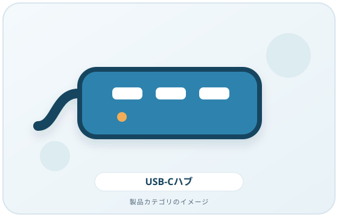
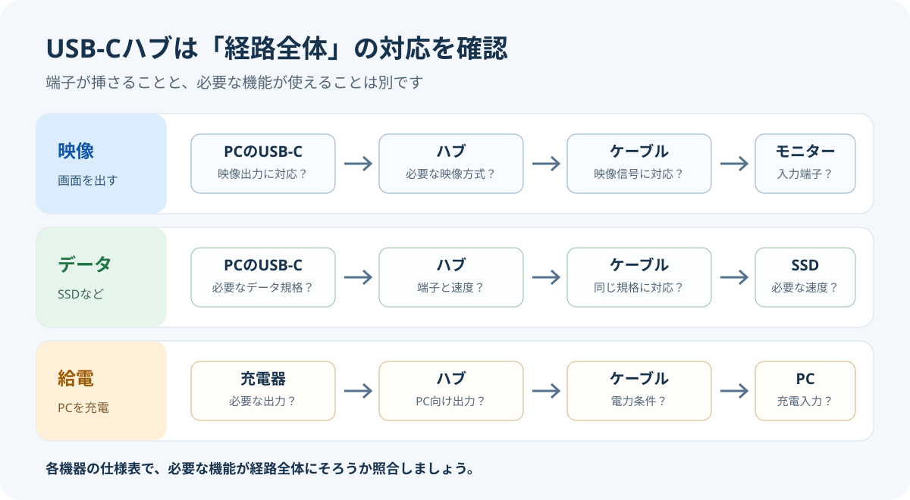
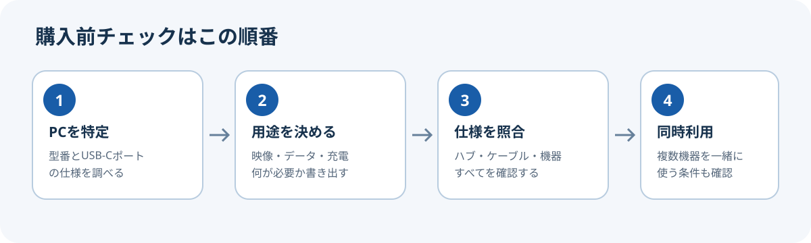

USB-C端子があるだけでは、外部ディスプレイ出力、データ転送速度、ノートPCへの充電に対応しているとは限りません。ハブを選ぶ前に、ノートPC・ハブ・ケーブル・接続機器が必要な機能に対応しているかをそれぞれ確認しましょう。
画像・ボタンはAmazonアソシエイトリンクです。適格購入により紹介料を得る場合があります。

Amazon.co.jpで「USB-C ハブ」を探す ↗


先に確認すること
- ノートPCの正確な機種名とUSB-Cポートの仕様を調べる。
- 映像、充電、データ転送のうち、ハブで使いたい機能を決める。
- ハブだけでなく、ケーブル、モニター、充電器も必要な規格に対応しているか照合する。
1. USB-Cの端子形状と機能を分けて考える
USB Type-Cは端子・コネクターの規格名です。USB-IFは、USB Type-CとUSB 3.2、USB4、USB Power Delivery（USB PD）は同じ意味ではなく、製品によって対応する機能や性能が異なると説明しています。つまり、端子の形が合うことだけでは、映像出力や高速データ転送、充電に対応するか判断できません。
製品仕様では「USB-C」とだけ書かれた箇所で判断せず、対応するデータ規格、映像出力、給電の記載を個別に探してください。
2. 外部ディスプレイを使うなら映像出力を確認する
USB-C経由で映像を出すには、PC側のポート、ハブまたはアダプター、ケーブル、ディスプレイが必要な映像方式に対応している必要があります。Microsoftは、DisplayPort Alternate Modeを利用する場合、PC・外部ディスプレイ・ケーブルの対応と、対応するUSB-Cポートへの接続を確認するよう案内しています。
次の項目をPCメーカーとハブメーカーの仕様表で照合しましょう。
- PCの該当ポートがDisplayPort Alternate Mode、Thunderbolt、または製品が必要とする映像機能に対応しているか
- ハブの映像端子がモニターの入力端子に合うか
- ケーブルが必要な映像信号に対応しているか
- 接続したいモニターの台数、解像度、リフレッシュレートをPCとハブの組み合わせが支えられるか
外部モニターを複数台つなぐ場合は、ハブの端子数だけで決めないでください。PCのグラフィックス機能、OS、ハブ方式によって利用条件が変わるため、PCとハブの両方の仕様で確認します。
3. ノートPCへの給電条件を確認する
ハブ経由でノートPCを充電したい場合は、PCのUSB-Cポートが充電入力に対応しているかを先に確認します。そのうえで、ハブの給電入力、PCへ出力できる電力、使用する充電器とケーブルの条件を比べます。
Microsoftは、PC・充電器・ケーブルが必要な規格と電力に対応している必要があると説明しています。ハブの説明に「最大○W」とあっても、その数値がPCへの出力なのか、ハブ全体の入力なのかを仕様表で確認してください。表記が曖昧な場合は、PCメーカーとハブメーカーに確認するまで、充電できる前提で選ばないのが安全です。
4. 必要なデータ転送速度を決める
マウス、キーボード、USBメモリー中心なら必要な速度は異なります。一方、外付けSSDなど大きなデータを扱う機器では、PCのポート、ハブ、ケーブル、接続機器のうち、どれか一つでも低い規格なら期待した速度が出ないことがあります。
仕様表で「USB 2.0」「USB 3.2」「USB4」などの表記を確認し、端子の形状だけで速度を判断しないでください。USB-IFもUSB Type-Cというコネクター名とデータ規格を区別しています。
5. 使うポート数と同時利用を確認する
必要な端子を先に書き出します。たとえば「外部モニター1台、USB-A機器2台、有線LAN、充電入力」のように用途で整理すると、不要な端子数に費用をかけにくくなります。
同時利用時に映像・データ・給電の機能が制限されないかも確認してください。PCに複数ディスプレイを接続する場合は、Windowsのサポート資料とPCメーカーの仕様で、PC側の外部ディスプレイ上限を調べます。
6. 対応機種とOSを確認する
「Windows対応」のような大まかな表記だけでなく、PCの正確な機種、OSのバージョン、必要な機能が製品の対応条件に含まれるかを確認します。メーカーが対応機種一覧や制限事項を公開している場合は、購入前に該当モデルを照合してください。
7. ケーブルと設置条件を忘れない
ハブに付属するケーブルが交換できるか、長さが机上の配置に合うか、PCケースや隣の端子と干渉しないかを確認します。ケーブルを別に用意する場合は、必要なデータ速度・映像方式・給電能力に対応している製品を選びます。見た目が同じUSB-Cケーブルでも対応機能が異なる場合があります。
用途別の購入前チェック
- モニター接続: PCの映像対応ポート、ハブの映像出力、ケーブル、モニター入力、台数・解像度を確認。
- PC充電: PCの充電入力、ハブのPC向け出力電力、充電器、ケーブルの条件を確認。
- 外付けSSD: PC・ハブ・ケーブル・SSDのデータ規格を確認。
- 複数機器の同時利用: 端子数だけでなく、同時使用時の映像・電力・速度の制限を確認。
購入を保留した方がよいケース
PCの型番やポート仕様が分からない、映像対応の記載が見当たらない、PCへの給電量が不明、または複数モニターの対応条件を確認できない場合は、先にメーカーの仕様表やサポート窓口で確認してください。端子が挿さることだけを根拠に購入すると、必要な機能が使えない可能性があります。
まとめ
USB-Cハブは、端子の形ではなく「自分のPCと周辺機器で必要な機能が成立するか」で選びます。PCの機種名、映像条件、給電条件、データ速度、同時利用する機器を一覧にし、PC・ハブ・ケーブルの仕様を一つずつ照合してください。この記事では特定商品の性能、価格、在庫、実使用結果を評価していません。
出典
- Windows の USB-C の問題を修正する — Microsoft Support（確認日: 2026-10-07）
- Windows での外部モニター接続のトラブルシューティング — Microsoft Support（確認日: 2026-10-07）
- USB Type-C and USB 2.0 Type-C Cable and Connector Guidelines — USB-IF（確認日: 2026-10-07）